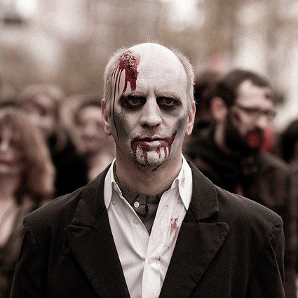
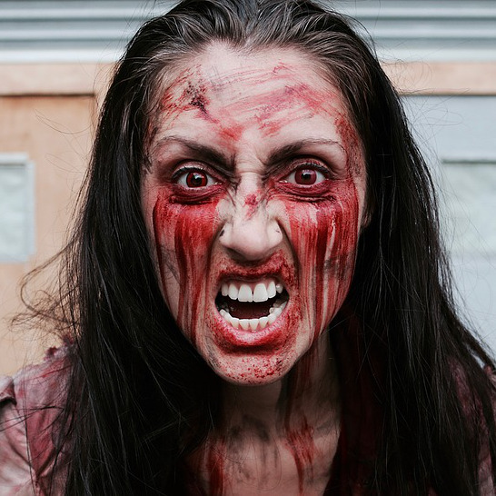
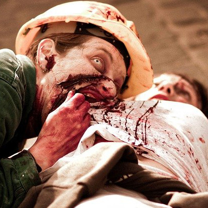
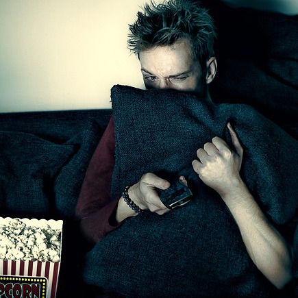

Zombies in need of a forever family
Frank

Frank used to work in finance; now he loves to meander the streets
aimlessly for days at a time. He's also into model trains.
Josie

Josie was once a musical theater major. She loves brains, music, and
visiting the dentist. Despite her condtion, Josie still loves to sing her
guts out!
Samuel

Can he build it? No he can't, but Samuel could before he got bit by his cousin.
Now he's into building friendships and eating out with them.
Gus

We're not sure if Gus is actually a zombie or not, but his image came up
during our stock photo search and we put him up for adoption anyway.
"At first me thought this was scam to give zombie easy access to brains.
Then me realize it so much more. Zombies need brain but also need love.
So glad me decide to open me-self up to zombie in need. Me suggest you open
you brain to possibilities too."
-Shawn Bludwurst